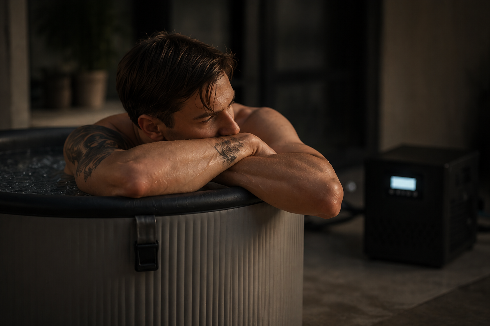

Deep Chill
Deep Chill
Deep Chill
Deep Chill
Why cold water?
Cold water is one of those things that sounds much worse than it actually is. Here's what it genuinely does — and why people keep coming back to it.
Most people come across cold plunging through a friend who won't stop going on about it, a physio who mentioned it, or something they half-listened to on a podcast. And then they try it. And something shifts — not dramatically, just noticeably. This page explains what's actually going on, without needing a biology degree to follow along.

When you get into cold water, your body immediately releases a surge of adrenaline and a powerful mood chemical. The science has a name for it — you don't need to know it. What matters is how it feels: most people describe the first few minutes after getting out as genuinely brilliant. Clear-headed, calm, and somehow buzzing — all at once. That feeling tends to hang around for hours, not minutes.
Over time and with a regular practice, people consistently report lower levels of anxiety and a more stable baseline mood. It's not euphoria. It's just feeling like yourself — but better.
Whether you're active in the gym, on the golf course, or just on your feet a lot — exercise and movement cause your muscles to get inflamed. That's what causes that heavy, stiff feeling the morning after. Cold water sends blood rushing to those muscles as you warm back up, clearing out the stuff that causes soreness and helping your body repair faster.
Multiple large-scale studies have confirmed what athletes already knew: cold water significantly reduces how sore and stiff you feel in the 24 to 96 hours after physical activity. The research is solid. The results are noticeable.
Here's something not many people know: your body temperature naturally drops as you fall asleep. That temperature shift is part of what tells your brain it's time to properly switch off. Cold immersion helps kick that process off earlier, giving your body a clear signal that the day is done.
People who plunge in the afternoon or evening consistently report falling asleep more quickly and waking up feeling genuinely rested. Not more hours of sleep necessarily — just better quality ones. The kind of sleep where you actually feel the benefit of it.

The cold forces your brain to snap into gear — not in a stressful way, but in the way it does when something genuinely has your full attention. That sharpness isn't just a feeling. Brain scans show that cold exposure activates the exact part of your brain responsible for focus, decision-making, and clear thinking.
The interesting thing is what happens over time. As the plunge gets easier — and it does get easier — so does everything else that requires that same kind of mental effort. It's like training your focus the same way you'd train a muscle.
A lot of people in their 40s and 50s carry a kind of low-level inflammation — the stiff joints first thing in the morning, the heaviness, the sense that recovery just takes longer than it used to. This isn't imagined. It's a real, measurable thing that tends to creep up over time.
Regular cold exposure has been shown to meaningfully reduce the body's inflammatory signals. In one study from Radboud University, people who practised cold exposure produced significantly fewer inflammation markers when their bodies were challenged. The effect isn't overnight — but it builds, and people notice it.
This one surprises people. When your body gets cold, it activates a special type of fat that burns energy to generate heat rather than storing it. The more regularly you expose yourself to cold water, the more your body gets at doing this — and the more efficiently it manages energy overall.
Research has found improvements in how the body handles blood sugar that are comparable in some ways to moderate exercise. This isn't a replacement for being active. But it does work in your favour, quietly, in the background — which is exactly what a good habit should do.
The one thing that makes it stick
"The habit is easy when the barrier is gone. That's what having it at home does — removes the only reason you'd skip it."
We're not making this up
The benefits on this page are drawn from published research — peer-reviewed studies from institutions including Radboud University, Stanford, and multiple sports medicine journals. We've deliberately left the references out of the main page because they can make it harder to read. If you want them, they're listed below.
A quick note: Cold water immersion isn't suitable for everyone. If you have a heart condition or any underlying health concerns, please check with your doctor before giving it a go. The information on this page is for general interest and doesn't constitute medical advice.
Get started
We handle the setup, the maintenance, and the temperature. You just show up. Check if we cover your area.
Check Availability